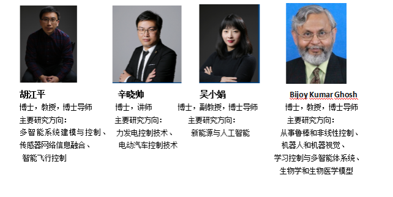
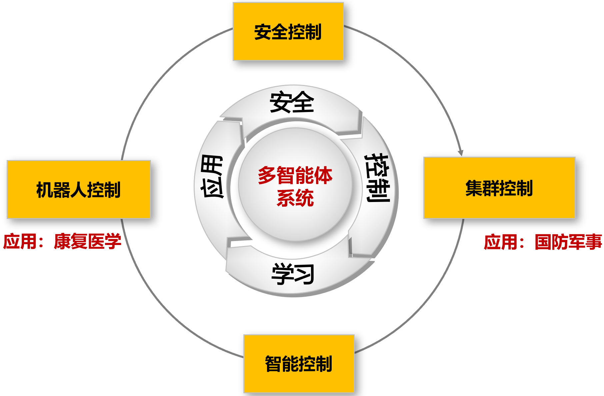

团队简介:

生物智能与控制研究中心目前有教授2人、副教授1人、讲师1人、博士研究生11名、硕士研究生14名，其中，国家级人才1人。团队主要从事多智能系统建模与控制、无人自主控制、机器人和机器视觉等方面研究。近年来，团队发表高水平论文100余篇，其中SCI论文60余篇；授权发明专利6项，专利发明9项；承担了国家重点研发计划、国家QR计划、国家自然科学基金、省部级科研计划等多个科研项目。团队成员在IEEE、中国自动化协会等重要学术组织担任了IEEE Fellow、专委会委员等，并在Journal of Systems Science and Complexity、Kybernetika等高水平期刊担任编委。团队成员还与美国德州理工大学、瑞典皇家工学院、香港城市大学、香港科技大学、澳大利亚西悉尼大学、日本上智大学等国际高校知名学者保持紧密的合作关系。
团队研究方向总览:

研究特色:
围绕多智能体系统理论，开展集群控制、智能控制研究以及在机器人系统上的应用。研究中心以生物系统为研究对象，以人工智能为支撑，以自动化技术为核心，从事脑机智能控制、机器视觉与多传感器信息融合、多智能体系统协调控制、机器人智能控制等领域新理论、新方法、新技术的基础及应用研究。